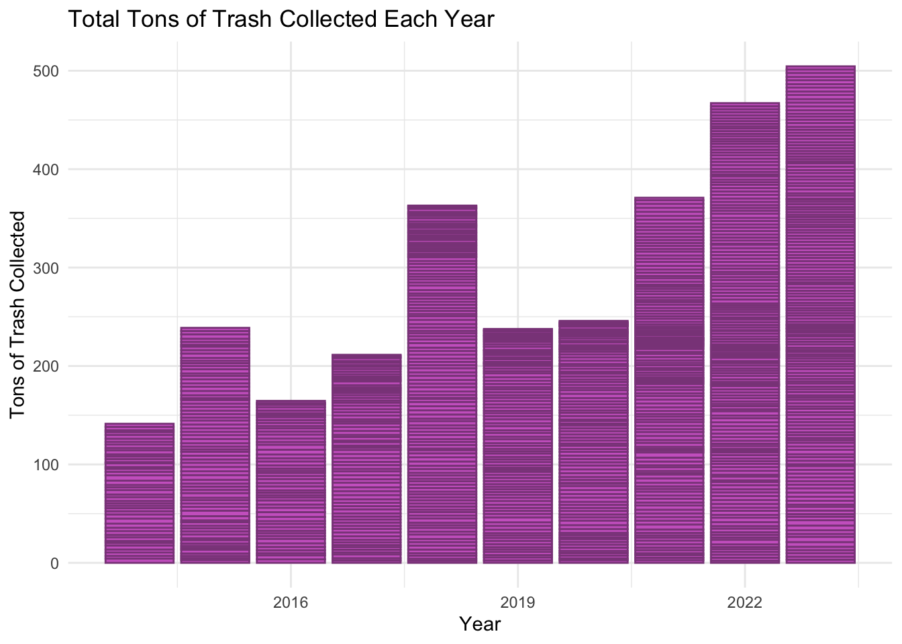

library(tidyverse)
library(broom)
library(modelr)Introduction
This dataset has information on Mr. Trash Wheel, a semi-autonomous trash interceptor, it is placed in a river that the ocean flows into and removes trash from the water. Using solar power and hydro power generated by the river, it also sustainably powers homes. I’ll be examining how much power Mr. Trash Wheel has generated over the years, how much of each type of trash is picked up and if it changes over time, and how much is collected in total. This data is from the tidy Tuesday github for March 5th. There’s 993 entries, each representing one emptying of the dumpster, and 16 variables. ID, Name, Dumpster, Month, Year, Date, Weight, Volume, HomesPowered, and 7 variables for specific types of trash. ID and Name are the nickname and name given to Mr. Trash Wheel that have changed occasionally over the years. Dumpster is the dumpster number. Month, Year, and Date are the month, year, and date that the data was collected. Weight and Volume are the weight in tons and volume in cubic yards, of trash collected. The other variables for types of trash are: PlasticBottles, Polystyrene, CigaretteButts, GlassBottles, PlasticBags, Wrappers, and SportsBalls.
Source: https://github.com/rfordatascience/tidytuesday/blob/master/data/2024/2024-03-05/readme.md
trashwheel <- readr::read_csv('https://raw.githubusercontent.com/rfordatascience/tidytuesday/master/data/2024/2024-03-05/trashwheel.csv')
trashwheel[is.na(trashwheel)] <- 0Primary Visualizations
The total weight of trash collected each year.
ggplot(trashwheel, aes(x = Year, y = Weight)) +
geom_col(fill = "orchid3", color = "orchid4") +
labs(title = "Total Tons of Trash Collected Each Year",
x = "Year",
y = "Tons of Trash Collected") +
theme_minimal()
weight_df <- trashwheel |> group_by(Year) |> summarise(Weight = sum(Weight))
ggplot(weight_df, aes(x = Year, y = Weight)) +
geom_col(fill = "skyblue3", color = "skyblue4") +
labs(title = "Total Tons of Trash Collected Each Year",
x = "Year",
y = "Tons of Trash Collected") +
theme_minimal()Here is two versions of a bar-plot to how how many tons of trash were intercepted each year, 2014 to 2023. It is clear that the weight of trash collected is growing. This could mean that Mr. Trash Wheel is working more efficiently, that the amount of trash in the ocean has increased, or (very likely) both. Looking at the orchid plot, each box that makes up the columns is one instance of emptying of the dumpster, and while it isn’t clear how many entries exactly are in each year, it is clear that the number of times the dumpster was emptied has increased each year.
The weight of trash in each entry over the years.
ggplot(trashwheel, aes(x = Year, y = Weight)) +
geom_point(alpha = 0.5) +
geom_smooth(method = "lm")This plot shows all each time the dumpster was empties, how many tons of trash were collected in that dumpster, and the trend of the average weight of trash in dumpsters when they are emptied. The above plots show that the total tons of trash collected each year is increasing, and this plot shows that the average tons of trash collected in each dumpster before emptying is decreasing. This is likely because we know the number of times the dumpster is emptied each year has greatly increased, it actually seems impressive how little the weight collected by dumpsters has changed since 2014 knowing in 2023 they were empties more then 3 times as often.
How many homes are predicted to be powered based on volume and weight of trash.
trash_mod <- lm(HomesPowered ~ Weight + Weight:Volume + Volume,
data = trashwheel)
grid <- trashwheel |>
data_grid(
Weight = seq_range(Weight, n = 10),
Volume = seq_range(Volume, n = 4))
trash_aug <- augment(trash_mod, newdata = grid,
interval = "confidence")ggplot(trash_aug, aes(x = Weight, y = .fitted)) +
geom_point(data = trashwheel, aes(y = HomesPowered), alpha = 0.2) +
geom_ribbon(aes(ymin = .lower, ymax = .upper, fill = as.factor(Volume)), alpha = 0.3) +
scale_fill_viridis_d() +
theme_minimal() +
labs(color = "Volume", y = "Homes Powered")This graph shows the predicted amount of homes powered based on the weight and volume of trash collected. More tons of trash means more power, but, 5 cubic yards of heavy trash is more efficient then 20 cubic yards of heavy trash. This may be because Mr. Trash Wheel used hydro power from the river to generate power, so trash density might effect how much power it creates.
Average of trash popularity over time.
trash_long <- trashwheel |> select(Year, PlasticBottles, Polystyrene, CigaretteButts,
GlassBottles, PlasticBags, Wrappers, SportsBalls) |>
pivot_longer(cols = c(PlasticBottles, Polystyrene, CigaretteButts,
GlassBottles, PlasticBags, Wrappers, SportsBalls),
names_to = "type", values_to = "amount") |>
group_by(Year, type) |>
summarise(amount = mean(amount))ggplot(trash_long, aes(x = Year, y = amount, color = type)) +
geom_line(size = 0.75) +
scale_color_viridis_d()Here is a plot that shows how common each of the 7 types of trash are when emptying the dumpster. Cigarettes clearly were the most common, and still in 2023 are the most common. When Mr. Trash Wheel was first installed cigarette it was collecting hundreds of thousands of cigarette butts each year (almost a million the first year), but there has been a sharp decline.
Average of trash popularity over time (Without Cigs).
no_cig <- trashwheel |> select(Year, PlasticBottles, Polystyrene,
GlassBottles, PlasticBags, Wrappers, SportsBalls) |>
pivot_longer(cols = c(PlasticBottles, Polystyrene,
GlassBottles, PlasticBags, Wrappers, SportsBalls),
names_to = "type", values_to = "Amount") |>
group_by(Year, type) |>
summarise(Amount = mean(Amount))ggplot(no_cig, aes(x = Year, y = Amount, color = type)) +
geom_line(size = 1.5) +
scale_color_viridis_d()Making this plot with out cigarette butts, we can more clearly see the popularity of the other 6 trash types. Sports balls and glass bottles are least common. This isn’t surprising to me for sports balls but, I assumes glass bottles would be higher. There also seems to be a spike in 2017, and a lull in 2021. 2021 might have to do with covid, Mr. Trash Wheel relies on trash flowing in from the ocean which might take time and the lock down might have caused people to not be able to litter as much, but the spike in 2017 is interesting and I’m not sure what would have caused that.
Number of homes powered
ggplot(trashwheel, aes(x = Year, y = HomesPowered)) +
geom_point() +
geom_smooth(color = "red") +
labs(title = "Homes Powered Over the Years",
x = "Year",
y = "Homes Powered") +
theme_minimal()This graph focuses on the number of homes powered over the years. The other graph looked at how many homes would be powered based on weight and volume of trash, this graph shows us just how the number of homes powered has changed. Each point is one emptying of the dumpster, and how many homes were powered since the last entry. If we compare this graph and the one above, we see the effects of the spike in trash in 2017, with a bump in the number of homes powered. After that it seems the number of homes powered hasn’t changed much.
Trash by month.
months_df <- trashwheel |>
filter(!is.na(Month)) |>
group_by(Month) |>
summarise(avg_weight = mean(Weight), sum_weight = sum(Weight)) |>
arrange(Month) |>
mutate(Month = fct_reorder(Month, avg_weight))
may_july <- months_df |> filter(Month == c("May", "July"))ggplot(months_df, aes(x = Month, y = avg_weight)) +
geom_segment(aes(xend = Month, yend = 0, color = Month)) +
geom_point(aes(color = Month), size = 1.5) +
scale_color_manual(values = c("May" = "violet", "July" = "yellow3", "June" = "red2",
"April" = "red2", "January" = "limegreen")) +
labs(title = "Average Weight of Trash Collected in Each Month",
subtitle = "From 2014 - 2023",
x = "Month",
y = "Average Weight (in Tons)") +
coord_flip() +
theme_minimal() +
guides(color = "none")ggplot(months_df |> arrange(Month) |> mutate(Month = fct_reorder(Month, sum_weight)),
aes(x = Month, y = sum_weight)) +
geom_segment(aes(xend = Month, yend = 0, color = Month)) +
geom_point(aes(color = Month), size = 1.5) +
scale_color_manual(values = c("May" = "violet", "July" = "yellow3", "June" = "red2",
"April" = "red2", "January" = "limegreen")) +
labs(title = "Total Weight of Trash Collected in Each Month",
subtitle = "From 2014 - 2023",
x = "Month",
y = "Total Weight (in Tons)") +
coord_flip() +
theme_minimal() +
guides(color = "none")These two plots show the months by average tons of trash collected and total tons of trash collected. I’ve highlighted some of the months. July has the most total tons of trash but is 4th in average tons, May has the highest average, but is 6th in total. June and April are consistently the highest when looking at both graphs, and January is the lowest in both. It seems January is a very clean month.
Conclusion and Wrap-Up
I think it woulds be interesting to look at 1) a more detailed breakdown of the trash in 2017, and see is there is anything I could learn about why that year had more then usual, 2) a linear model to predict weight or volume by types of trash and see if there is anything interesting to learn from that, and 3) see if there being more or less of any of the 7 types of trash equals more or less homes powered.
Connection to Class Ideas
I think that the last plots are a cool way to compare average and total weight, I like the color coordination. I would say all the other plots are effectively showing what I intend, and together give the information I was indenting to look at in a easy to understand but still accurate way.